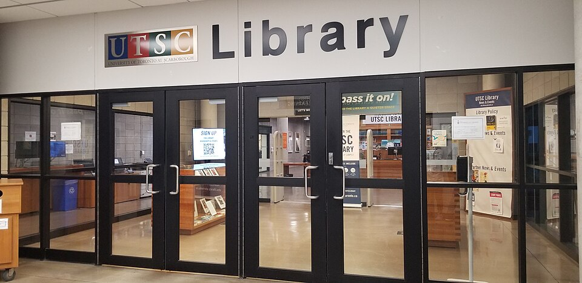

대학 도서관 이미지(토론토대학교 스카버러) · 사진: Silver Dovelet / Wikimedia Commons, CC BY-SA 3.0
국제학교 진학 카운슬러(College Counselor) 활용법 — 언제 만나고, 무엇을 묻나
1. 먼저 — 학교 안에 "카운슬러"가 여러 명이다
학교 안내문에 Counselor라는 단어가 여러 번 나와서 헷갈리는 경우가 많습니다. 학교마다 이름과 구분이 다르지만, 대체로 세 갈래로 나뉘는 것으로 알려져 있습니다.
| 부르는 이름(예) | 맡는 일 | 언제 찾아가나 |
|---|---|---|
| Academic Counselor (학업 담당) | 시간표·과목 선택·학점 요건 | 과목을 고를 때, 과목을 바꾸고 싶을 때 |
| College·University Counselor (진학 담당) | 대학 지원 전 과정 · 추천서 · 마감 | G10 후반~G12, 학교 리스트를 짤 때 |
| Pastoral·Wellbeing Counselor (생활·정서) | 적응·교우관계·정서 | 편입 직후, 아이가 힘들어할 때 |
규모가 작은 학교는 한 사람이 두세 역할을 겸하기도 합니다. 그래서 첫 면담 요청을 보낼 때 "어떤 건으로 누구를 만나야 하는지"를 먼저 물어보시는 편이 빠릅니다. 이 글에서 다루는 것은 가운데 줄, 진학 담당 카운슬러입니다.
2. 학년별로 언제 만나야 하나
학교마다 일정이 다르지만, 흐름은 대체로 비슷합니다. 아래는 미국식·IB·영국식을 통틀어 공통으로 걸리는 지점만 정리한 것입니다. 실제 일정은 학교 공지를 확인하세요.
· G9 (Year 10) — 과목 선택 상담. 진학 상담이 아니라 과목 상담으로 처음 만납니다. 하지만 이때 고른 과목이 2~3년 뒤 지원 가능한 전공을 가르기 때문에, 사실상 진학 상담의 출발점입니다. → IGCSE 과목 선택·AP 과목 선택
· G10 (Year 11) — 얼굴을 익혀 두는 시기. 아직 급한 것이 없어 보이지만, 이때 한 번 만나 두면 카운슬러가 우리 아이를 "이름과 얼굴이 있는 학생"으로 기억합니다. 나중에 추천서의 질이 달라지는 지점입니다.
· G11 (Year 12) — 본격 시작. 관심 전공과 지역(미국·영국·캐나다·한국 등)을 좁히고, 표준화 시험 일정을 잡고, 지원 학교 리스트 초안을 만듭니다. 이 시기에 카운슬러와 합이 맞아야 G12가 편합니다.
· G12 (Year 13) — 실행. 추천서 요청, 성적표·학교 프로필 발송, 지원 플랫폼 학교 승인, 마감 관리. 이때 처음 만나면 이미 늦습니다.
한국 가정에서 가장 흔한 오해가 "성적이 나와야 상담할 게 있다"는 생각입니다. 반대입니다. 성적이 확정되기 전에 만나야 성적을 어디에 쓸지 설계할 수 있습니다.
3. 해주는 일과 해주지 않는 일
이 선을 미리 알고 가면 실망도 줄고, 어디를 다른 방법으로 메워야 하는지도 보입니다.
| ✅ 카운슬러가 하는 일 | ❌ 하지 않는 일 |
|---|---|
| 성적표·학교 프로필 발송 | 떨어진 내신을 올려 주기 |
| 카운슬러 추천서 작성, 교과 추천서 취합 | 에세이 대신 써 주기 |
| 지원 플랫폼 학교 승인·서류 업로드 | 부족한 과목 보충 수업 |
| 마감 일정 관리와 안내 | 시험 점수 올리기 |
| 과목 조합이 학교 규정에 맞는지 확인 | 우리 아이만 전담으로 챙기기 |
오른쪽 칸이 바로 가정과 과외가 메워야 하는 자리입니다. 카운슬러가 "이 학생은 수학 성적이 올라오면 선택지가 넓어집니다"라고 말했다면, 그 말은 계획이 아니라 숙제입니다. 그 숙제를 실제로 해내는 것은 학교 밖의 일입니다.
4. 면담 전에 준비할 것 — 질문 목록
면담 시간은 보통 짧습니다. 준비 없이 들어가면 "잘하고 있어요"만 듣고 나오게 됩니다. 아래 다섯 가지를 종이에 적어 들어가시면 같은 시간에 훨씬 많은 것을 얻습니다.
① "지금 성적과 과목 조합으로 현실적으로 어느 범위의 학교를 볼 수 있나요?" — 막연한 희망 대신 범위를 물으세요.
② "아이가 생각하는 전공에 지금 과목 조합이 맞나요? 빠진 과목이 있나요?" — 가장 값이 큰 질문입니다. 바꿀 수 있는 시기에 물어야 합니다.
③ "추천서를 부탁드릴 선생님은 누구로 하는 게 좋을까요?" — 성적이 가장 높은 과목이 아니라, 아이를 가장 잘 아는 선생님인 경우가 많습니다.
④ "올해 안에 반드시 치러야 할 시험과 마감이 무엇인가요?" — 표준화 시험·어학 시험 일정을 달력에 옮겨 적으세요.
⑤ "지금 가장 약한 부분 한 가지만 꼽아 주신다면?" — 면담에서 딱 하나만 건져야 한다면 이것입니다. 다음 학기 목표가 여기서 나옵니다.
그리고 면담이 끝나면 들은 내용을 그날 안에 메모로 정리해 두세요. 반년 뒤에 "그때 뭐라고 하셨더라"가 반드시 옵니다.
5. 한국 가정이 자주 놓치는 세 가지
· 영어가 부담돼 면담을 미룬다. 부모님의 영어가 완벽할 필요는 없습니다. 질문을 미리 적어 가면 충분하고, 필요하면 아이를 통역으로 데려가도 됩니다. 아이가 자기 진학 이야기를 옮기는 과정에서 스스로 정리되는 효과도 있습니다.
· 추천서를 서류로만 생각한다. 카운슬러 추천서는 평소에 쌓인 인상으로 써집니다. G12 9월에 잘 보이려 해도 늦습니다. G10부터 얼굴을 익혀 두는 것이 준비입니다.
· 외부 컨설팅과 학교 말이 엇갈릴 때 혼자 고민한다. 흔한 일입니다. 이럴 때는 어느 쪽이 옳은지 따지기보다 "학교 서류에 최종 책임이 있는 쪽은 카운슬러"라는 점을 기준으로 삼으시고, 엇갈리는 부분을 그대로 카운슬러에게 물어보시는 편이 빠릅니다.
6. 과외는 어디를 맡나 — 역할 분담
카운슬러는 학교 안의 정보를 다룹니다. 과외는 그 계획이 실제로 가능해지도록 만드는 쪽을 다룹니다. 겹치지 않고 이어집니다.
📖 영어과외 — 에세이는 대신 써 주는 것이 아니라 쓰게 만드는 것
지원 에세이든 학교 과제든, 필요한 것은 자기 경험을 구조로 배치하는 힘입니다. 소재를 함께 찾고, 뼈대를 잡고, 문장을 다듬는 과정을 1:1로 반복합니다. 이 힘은 원서철에 급히 만들 수 없어서, 내신 글쓰기를 고치는 동안 같이 자랍니다. (영어 공부법·에세이·인터뷰 참고)
📐 수학과외 — 선택지를 지키는 과목
진학에서 선택지를 가장 빨리 좁히는 과목이 수학입니다. 수학이 무너지면 이공·경영 계열이 한꺼번에 닫힙니다. 알지브라부터 영어 용어로 다시 연결하고 서술형 풀이를 잡아두면, 카운슬러가 제안하는 과목 조합을 실제로 소화할 수 있게 됩니다. (알지브라 공부법·IB DP 점수 참고)
🗺️ 그리고 — 면담 내용을 공유하세요
면담에서 들은 약점 한 가지와 마감 일정을 과외 선생님과 공유하면, 다음 학기 수업 목표가 훨씬 구체적으로 잡힙니다. "영어를 잘하게"가 아니라 "12월까지 분석 문단 쓰기"처럼 바뀝니다.
정리
진학 카운슬러는 학교가 주는 가장 큰 무료 자원인데, 늦게 만나면 서류 담당으로 끝납니다. ① 학교 안에 카운슬러가 여러 명이니 누구를 만날지 먼저 확인하고, ② G9 과목 상담 → G10 얼굴 익히기 → G11 리스트 → G12 실행의 흐름을 기억하고, ③ 해주지 않는 일은 가정과 과외가 메우고, ④ 면담에는 질문 다섯 가지를 적어 들어가세요. 30분 무료 상담으로 다음 면담에서 무엇을 물어야 할지부터 같이 정리해 드립니다.